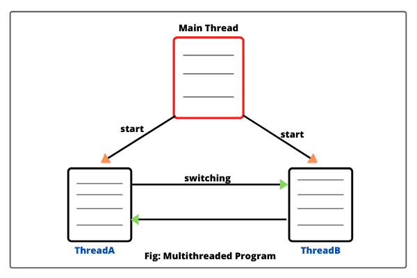
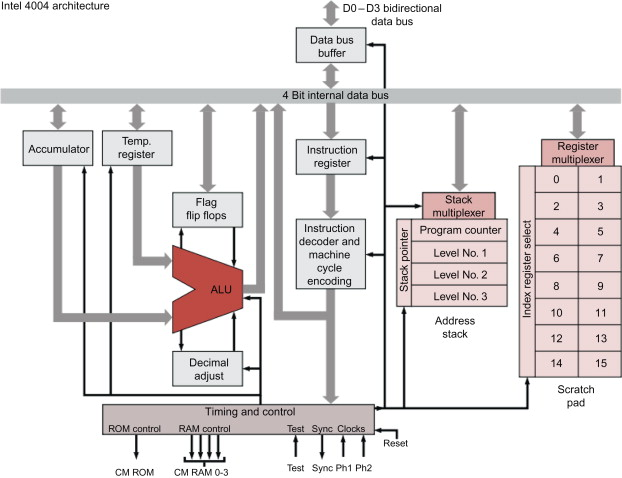
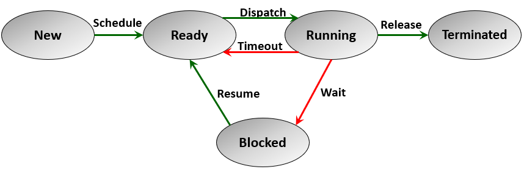

Nit je osnovna enota izvajanja programa, ki omogoča vzporedno obdelavo podatkov v sistemu. Znotraj ene aplikacije je mogoče ustvariti več niti, ki se izvajajo sočasno. Nit sestavljajo skladišče podatkov, registri in kazalec na trenutno izvajano ukazno vrstico.
Jedro je osnovni računski del procesorja, odgovoren za izvajanje operacij in ukazov. Sodobni procesorji so pogosto večjedrni, kar pomeni, da vsebujejo več jeder, ki omogočajo hkratno obdelavo več niti ali programov. Tako večjedrni procesorji močno povečajo zmogljivost sistema in omogočajo učinkovitejšo porabo procesorskih virov.
Prednosti večnitnega programiranja vključujejo izboljšano zmogljivost, boljšo izrabo sistemskih virov ter večjo odzivnost in hitrost aplikacij. Slabosti pa se pojavijo pri sinhronizaciji niti, saj nepravilno urejanje dostopa do virov lahko povzroči težave, kot so mrtvi čas (deadlock), tekmovalni pogoji (race conditions) in zvezdno izstradanje (starvation).
Enojedrni procesorji omogočajo obdelavo le ene niti hkrati, kar omejuje zmogljivost pri večopravilnosti. Večjedrni procesorji pa omogočajo hkratno obdelavo več niti, kar povečuje hitrost pri kompleksnih nalogah, kot so obdelava slik, podatkov in iger.
V simetričnih večprocesorskih (SMP) sistemih je več jeder povezanih s skupnim pomnilnikom, kar omogoča hkratno dostopanje do podatkov. V porazdeljenih sistemih pa vsako jedro obdeluje lasten pomnilnik, kar povečuje hitrost, vendar zahteva učinkovitejšo komunikacijo za usklajevanje procesov.
Razporejanje niti je proces, pri katerem operacijski sistem določi, katera nit bo obdelana v določenem trenutku. Algoritmi razporejanja vključujejo krožno razporejanje (Round Robin), prednostno razporejanje in razporejanje z najkrajšim časom izvajanja (Shortest Job First).
Sinhronizacija niti omogoča varno uporabo virov. Zaklepi, kot so mutexi, semaforji in monitorji, se uporabljajo za nadzor nad dostopom do skupnih virov, kar preprečuje napake, kot so mrtvi čas in tekmovalni pogoji. Brez ustrezne sinhronizacije lahko pride do resnih napak v delovanju sistema..
Večnitnost je ključnega pomena pri obdelavi velikih podatkov, kjer omogoča hkratno obdelavo velikih podatkovnih nizov. Algoritmi, kot je MapReduce, omogočajo razdelitev nalog na več niti, kar pospeši obdelavo podatkov v realnem času.
V grafiki in video igrah večnitnost omogoča obdelavo različnih grafičnih elementov hkrati, kar skrajša čas osveževanja in povečuje kakovost slike. Procesorji GPU s številnimi jedri omogočajo, da se grafika obdeluje hitro in učinkovito, kar je ključno za vizualno zahtevne aplikacije.
Strežniški sistemi uporabljajo večnitnost za obdelavo velikega števila zahtevkov uporabnikov hkrati. Vsak uporabniški proces je dodeljen svoji niti, kar izboljša odzivnost sistema in omogoča stabilno delovanje tudi ob visokih obremenitvah.
Razvoj večnitnih in večjedrnih tehnologij se sooča z izzivi, kot so energetska učinkovitost in nadzor nad procesorsko toploto, saj več jeder zahteva več energije in povzroča segrevanje sistema. V prihodnosti se pričakuje razvoj novih metod za optimizacijo sinhronizacije, kot tudi napredek pri arhitekturah, kot so nevromorfni in kvantni procesorji, ki bi omogočili še učinkovitejše vzporedno procesiranje.
• Cena procesorjev z več jedri: Večjedrni procesorji so dražji, saj so zahtevnejši za proizvodnjo. Na primer, procesorji s 64 jedri, kot so AMD-jev Threadripper serije PRO, lahko stanejo več tisoč evrov. To je ključno za podjetja, ki se ukvarjajo z zahtevnimi nalogami, kot so obdelava velikih podatkov in 3D modeliranje.
• Zgodovina niti: Prva oblika večnitnosti se je pojavila v 1960-ih letih z razvojem časovno deljenih operacijskih sistemov, ki so omogočali večopravilnost in povečali izrabo procesorskega časa.
• Delo na mobilnih napravah: Sodobni telefoni imajo večjedrne procesorje (4-16 jeder), ki omogočajo učinkovito izvajanje aplikacij v ozadju brez prekomerne porabe baterije. To omogoča tudi gladko večopravilnost na napravah, kjer je omejen prostor za hlajenje.
• Vpliv večnitnosti na igričarske zmogljivosti: V igričarskem svetu večnitnost omogoča izjemno hitro odzivnost in gladke vizualne učinke, saj so igre zasnovane tako, da obdelujejo več komponent hkrati – na primer fizikalni model, animacije, umetno inteligenco nasprotnikov in zvok.
• Superračunalniki in cena: Superračunalniki, kot je Summit, imajo več kot 2 milijona jeder in stanejo več sto milijonov evrov. Takšni sistemi so ključni za znanstvene simulacije, ki zahtevajo ogromno računsko moč, kot so vremenske napovedi in genetske analize.
• Biološki vzporedni procesi: Koncept večnitnosti ima vzporednice v biologiji – na primer v človeškem živčnem sistemu, kjer nevroni simultano obdelujejo različne dražljaje, kar omogoča hitro odzivnost na kompleksne zunanje impulze.
Niti in jedra predstavljajo ključno komponento sodobnega računalništva, saj omogočajo večopravilnost, povečajo hitrost in izboljšajo uporabniško izkušnjo v raznovrstnih aplikacijah. Sodobni večjedrni procesorji so posebej prilagojeni za sočasno obdelavo več podatkovnih tokov, kar je ključnega pomena v računalniški grafiki, obdelavi podatkov in umetni inteligenci. S širjenjem tehnologij večnitnosti ter z razvojem novih arhitektur se bo računalniška zmogljivost še naprej povečevala, omogočajoč nadaljnje inovacije in razvoj.
Spletna stran: Blaž Kavalar
Powerpoint: Liam Simonič
Quiz: Liam Dašević Zobić
Word: Iztok Žakelj
https://www.google.com/imgres?q=multithreading&imgurl=https%3A%2F%2Fwww.scientecheasy.com%2Fwp-content%2Fuploads%2F2020%2F08%2Fmultithreaded.png&imgrefurl=https%3A%2F%2Fwww.scientecheasy.com%2F2020%2F08%2Fjava-multithreading.html%2F&docid=exN_BZ-UbrX0N
https://www.google.com/imgres?q=Processor%20and%20core%20architecture&imgurl=https%3A%2F%2Fars.els-cdn.com%2Fcontent%2Fimage%2F3-s2.0-B9780128014134000118-f11-14-9780128014134.jpg&imgrefurl=https%3A%2F%2Fwww.sciencedirect.com%2Ftopics%2Fcomputer-scienc
https://www.google.com/imgres?q=%0D%0AThread%20control%20and%20resource%20management&imgurl=https%3A%2F%2Fcodeahoy.com%2Fimg%2Fbooks%2Fcomputersos%2Fmedia2%2Fmedia%2Fimage1.png&imgrefurl=https%3A%2F%2Fcodeahoy.com%2Flearn%2Fcomputersos%2Fch2%2F&docid=U